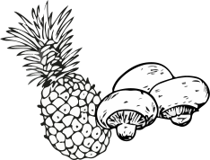
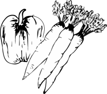

Plant-Based
A plant-based diet is a diet consisting mostly or entirely of foods derived from plants, including vegetables, grains, nuts, seeds, legumes and fruits, and with few or no animal products. A plant based-diet is not necessarily vegetarian.
Vegetarian
Vegetarianism is the practice of abstaining from the consumption of meat, and may also include abstention from by-products of animals processed for food. Vegetarianism may be adopted for various reasons. Many people object to eating meat out of respect for sentient life.
Vegan
Veganism is the practice of abstaining from the use of animal products, particularly in diet, and an associated philosophy that rejects the commodity status of animals. A follower of the diet or the philosophy
is known as a vegan. Distinctions may be made between several categories of veganism.
Pescatarian
A pescatarian is someone who chooses to eat a vegetarian diet, but who also eats fish and other seafood. It's a largely plant-based diet of whole grains, nuts, legumes, produce and healthy fats, with seafood playing a key role as a main protein source. Many pescatarians also eat dairy and eggs.